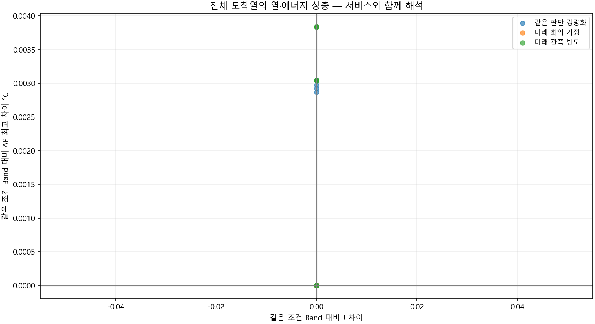
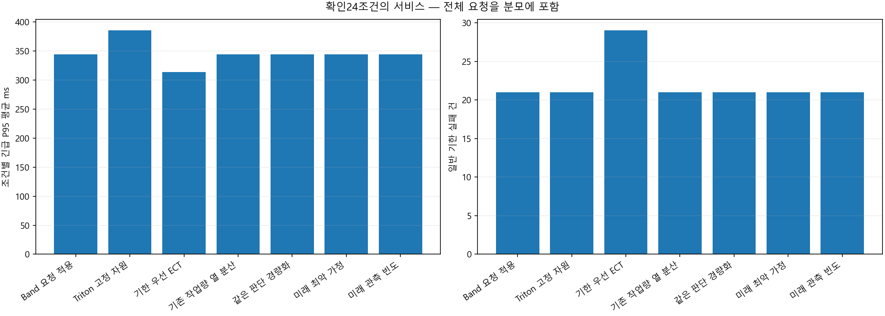
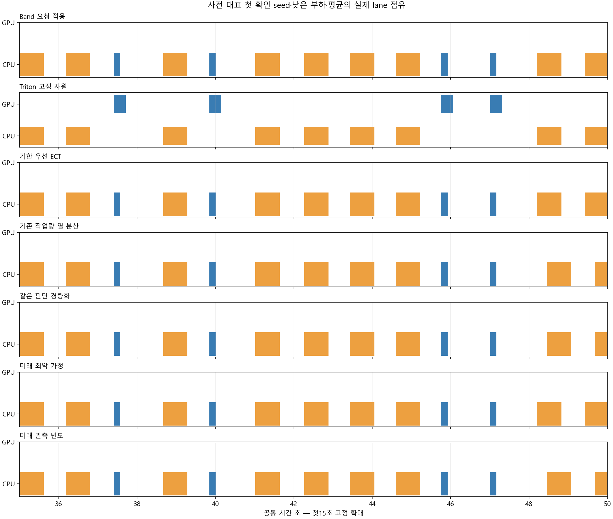
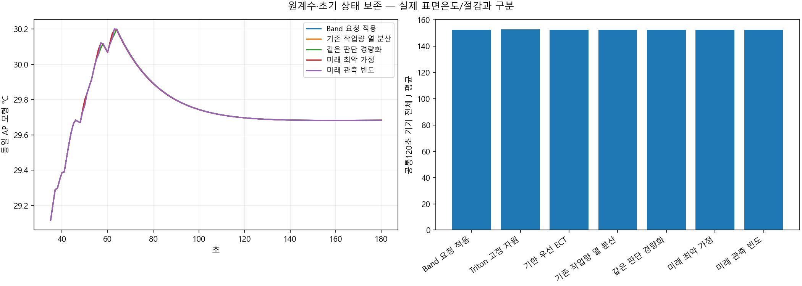
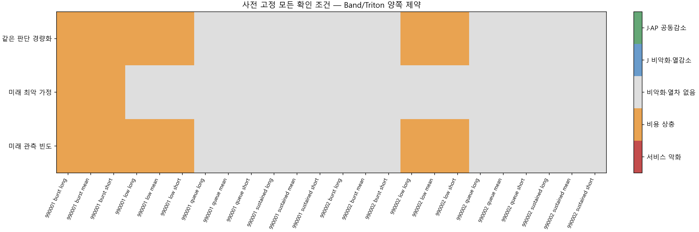

전체 도착 요청 · 개발24조건 뒤 선택 동결 · 새 확인24조건 · 7역할. 실제 미래는 정책에 전달하지 않으며 가상 요청은 예측에만 사용합니다.
개발 선택: 미래 관측 빈도, 확인 적격: False. 물리적 절감이나 실제 표면온도 우위가 아닙니다.
설계·판정·한계 · 전체 확인 CSV · 동일 판단 속도 비교
| 규칙 | 판단 차이 |
|---|---|
| Band 요청 적용 | 원 Band 요청 규칙 |
| Triton 고정 자원 | 원 고정 자원 규칙 |
| 기한 우선 ECT | 원 EDD·ECT |
| 기존 작업량 열 분산 | 기존 도착큐 예측·작업량 허용 |
| 같은 판단 경량화 | 같은 전체 후보·원식 벡터화 |
| 미래 최악 가정 | 실제 Band/대기·관측 미래가정 최악 AP |
| 미래 관측 빈도 | 같은 행동·서비스/J검사·관측 빈도 AP |
| 정책 | 완료 | 예정 | 긴급 실패 | 일반 실패 | P95 평균 ms | J 평균 | AP 평균 | 양 기준 대비 열감소 | 공동감소 |
|---|---|---|---|---|---|---|---|---|---|
| Band 요청 적용 | 1584 | 1584 | 0 | 21 | 344.23859 | 152.27053 | 30.865941 | 0 | 0 |
| Triton 고정 자원 | 1584 | 1584 | 0 | 21 | 385.07925 | 152.7148 | 30.911651 | 0 | 0 |
| 기한 우선 ECT | 1584 | 1584 | 0 | 29 | 313.40858 | 152.37145 | 30.831861 | 0 | 0 |
| 기존 작업량 열 분산 | 1584 | 1584 | 0 | 21 | 344.23859 | 152.27053 | 30.866687 | 0 | 0 |
| 같은 판단 경량화 | 1584 | 1584 | 0 | 21 | 344.23859 | 152.27053 | 30.866687 | 0 | 0 |
| 미래 최악 가정 | 1584 | 1584 | 0 | 21 | 344.23859 | 152.27053 | 30.865941 | 0 | 0 |
| 미래 관측 빈도 | 1584 | 1584 | 0 | 21 | 344.23859 | 152.27053 | 30.866801 | 0 | 0 |
| seed | 부하 | 문맥 | 후보 | 판정 | Band J 차이 | AP 차이 | P95 차이 ms | 일반 지연 ms |
|---|---|---|---|---|---|---|---|---|
| 814020101 | low | mean | Triton 고정 자원 | 서비스 악화 | 0.28555104 | 0.048851393 | 137.8747 | 0 |
| 814020101 | low | mean | 기한 우선 ECT | 비악화·열차 없음 | 0 | 0 | 0 | 0 |
| 814020101 | low | mean | 기존 작업량 열 분산 | 비용 상충 | 0 | 0.0029218037 | 0 | 111.11111 |
| 814020101 | low | mean | 같은 판단 경량화 | 비용 상충 | 0 | 0.0029218037 | 0 | 111.11111 |
| 814020101 | low | mean | 미래 최악 가정 | 비악화·열차 없음 | 0 | 0 | 0 | 0 |
| 814020101 | low | mean | 미래 관측 빈도 | 비용 상충 | 0 | 0.0038382441 | 0 | 83.333333 |
| 814020101 | low | short_context | Triton 고정 자원 | 서비스 악화 | 0.26363747 | 0.047491152 | 130.42855 | 0 |
| 814020101 | low | short_context | 기한 우선 ECT | 비악화·열차 없음 | 0 | 0 | 0 | 0 |
| 814020101 | low | short_context | 기존 작업량 열 분산 | 비용 상충 | 0 | 0.0028672428 | 0 | 111.11111 |
| 814020101 | low | short_context | 같은 판단 경량화 | 비용 상충 | 0 | 0.0028672428 | 0 | 111.11111 |
| 814020101 | low | short_context | 미래 최악 가정 | 비악화·열차 없음 | 0 | 0 | 0 | 0 |
| 814020101 | low | short_context | 미래 관측 빈도 | 비용 상충 | 0 | 0.0038337159 | 0 | 83.333333 |
| 814020101 | low | long_context | Triton 고정 자원 | 서비스 악화 | 0.30746461 | 0.050212117 | 145.32086 | 0 |
| 814020101 | low | long_context | 기한 우선 ECT | 비악화·열차 없음 | 0 | 0 | 0 | 0 |
| 814020101 | low | long_context | 기존 작업량 열 분산 | 비용 상충 | 0 | 0.0029734627 | 0 | 111.11111 |
| 814020101 | low | long_context | 같은 판단 경량화 | 비용 상충 | 0 | 0.0029734627 | 0 | 111.11111 |
| 814020101 | low | long_context | 미래 최악 가정 | 비악화·열차 없음 | 0 | 0 | 0 | 0 |
| 814020101 | low | long_context | 미래 관측 빈도 | 비용 상충 | 0 | 0.0038425314 | 0 | 83.333333 |
| 814020101 | queue | mean | Triton 고정 자원 | 비악화·열차 없음 | 0 | 0 | 0 | 0 |
| 814020101 | queue | mean | 기한 우선 ECT | 서비스 악화 | 0.0864937 | -0.051505594 | -108.76538 | 257.0031 |
| 814020101 | queue | mean | 기존 작업량 열 분산 | 비악화·열차 없음 | 0 | 0 | 0 | 0 |
| 814020101 | queue | mean | 같은 판단 경량화 | 비악화·열차 없음 | 0 | 0 | 0 | 0 |
| 814020101 | queue | mean | 미래 최악 가정 | 비악화·열차 없음 | 0 | 0 | 0 | 0 |
| 814020101 | queue | mean | 미래 관측 빈도 | 비악화·열차 없음 | 0 | 0 | 0 | 0 |
| 814020101 | queue | short_context | Triton 고정 자원 | 비악화·열차 없음 | 0 | 0 | 0 | 0 |
| 814020101 | queue | short_context | 기한 우선 ECT | 서비스 악화 | 0.089195118 | -0.051747896 | -101.04201 | 257.0031 |
| 814020101 | queue | short_context | 기존 작업량 열 분산 | 비악화·열차 없음 | 0 | 0 | 0 | 0 |
| 814020101 | queue | short_context | 같은 판단 경량화 | 비악화·열차 없음 | 0 | 0 | 0 | 0 |
| 814020101 | queue | short_context | 미래 최악 가정 | 비악화·열차 없음 | 0 | 0 | 0 | 0 |
| 814020101 | queue | short_context | 미래 관측 빈도 | 비악화·열차 없음 | 0 | 0 | 0 | 0 |
| 814020101 | queue | long_context | Triton 고정 자원 | 비악화·열차 없음 | 0 | 0 | 0 | 0 |
| 814020101 | queue | long_context | 기한 우선 ECT | 서비스 악화 | 0.08379228 | -0.05134767 | -116.48875 | 257.0031 |
| 814020101 | queue | long_context | 기존 작업량 열 분산 | 비악화·열차 없음 | 0 | 0 | 0 | 0 |
| 814020101 | queue | long_context | 같은 판단 경량화 | 비악화·열차 없음 | 0 | 0 | 0 | 0 |
| 814020101 | queue | long_context | 미래 최악 가정 | 비악화·열차 없음 | 0 | 0 | 0 | 0 |
| 814020101 | queue | long_context | 미래 관측 빈도 | 비악화·열차 없음 | 0 | 0 | 0 | 0 |
| 814020101 | burst | mean | Triton 고정 자원 | 서비스 악화 | -0.036864806 | 0.025890291 | 50.975887 | -163.89174 |
| 814020101 | burst | mean | 기한 우선 ECT | 비용 상충 | 0.088948801 | -0.028663763 | -137.8747 | 290.48927 |
| 814020101 | burst | mean | 기존 작업량 열 분산 | 비용 상충 | 0 | 0 | 0 | 0 |
| 814020101 | burst | mean | 같은 판단 경량화 | 비용 상충 | 0 | 0 | 0 | 0 |
| 814020101 | burst | mean | 미래 최악 가정 | 비용 상충 | 0 | 0 | 0 | 0 |
| 814020101 | burst | mean | 미래 관측 빈도 | 비용 상충 | 0 | 0 | 0 | 0 |
| 814020101 | burst | short_context | Triton 고정 자원 | 서비스 악화 | -0.039566224 | 0.025874927 | 43.252516 | -163.89174 |
| 814020101 | burst | short_context | 기한 우선 ECT | 비용 상충 | 0.090426126 | -0.027520142 | -130.42855 | 287.52258 |
| 814020101 | burst | short_context | 기존 작업량 열 분산 | 비용 상충 | 0 | 0 | 0 | 0 |
| 814020101 | burst | short_context | 같은 판단 경량화 | 비용 상충 | 0 | 0 | 0 | 0 |
| 814020101 | burst | short_context | 미래 최악 가정 | 비용 상충 | 0 | 0 | 0 | 0 |
| 814020101 | burst | short_context | 미래 관측 빈도 | 비용 상충 | 0 | 0 | 0 | 0 |
| 814020101 | burst | long_context | Triton 고정 자원 | 서비스 악화 | -0.034163387 | 0.02695879 | 58.699258 | -163.89174 |
| 814020101 | burst | long_context | 기한 우선 ECT | 서비스 악화 | 0.087528816 | -0.029809603 | -145.32086 | 293.59493 |
| 814020101 | burst | long_context | 기존 작업량 열 분산 | 비용 상충 | 0 | 0 | 0 | 0 |
| 814020101 | burst | long_context | 같은 판단 경량화 | 비용 상충 | 0 | 0 | 0 | 0 |
| 814020101 | burst | long_context | 미래 최악 가정 | 비용 상충 | 0 | 0 | 0 | 0 |
| 814020101 | burst | long_context | 미래 관측 빈도 | 비용 상충 | 0 | 0 | 0 | 0 |
| 814020101 | sustained | mean | Triton 고정 자원 | 비용 상충 | 1.5075262 | 0.13098661 | 0 | 0 |
| 814020101 | sustained | mean | 기한 우선 ECT | 비용 상충 | 0.19454992 | -0.043609864 | 0 | 52.504776 |
| 814020101 | sustained | mean | 기존 작업량 열 분산 | 비악화·열차 없음 | 0 | 0 | 0 | 0 |
| 814020101 | sustained | mean | 같은 판단 경량화 | 비악화·열차 없음 | 0 | 0 | 0 | 0 |
| 814020101 | sustained | mean | 미래 최악 가정 | 비악화·열차 없음 | 0 | 0 | 0 | 0 |
| 814020101 | sustained | mean | 미래 관측 빈도 | 비악화·열차 없음 | 0 | 0 | 0 | 0 |
| 814020101 | sustained | short_context | Triton 고정 자원 | 비용 상충 | 1.3885322 | 0.126924 | 0 | 0 |
| 814020101 | sustained | short_context | 기한 우선 ECT | 비용 상충 | 0.204036 | -0.04257377 | 0 | 52.271265 |
| 814020101 | sustained | short_context | 기존 작업량 열 분산 | 비악화·열차 없음 | 0 | 0 | 0 | 0 |
| 814020101 | sustained | short_context | 같은 판단 경량화 | 비악화·열차 없음 | 0 | 0 | 0 | 0 |
| 814020101 | sustained | short_context | 미래 최악 가정 | 비악화·열차 없음 | 0 | 0 | 0 | 0 |
| 814020101 | sustained | short_context | 미래 관측 빈도 | 비악화·열차 없음 | 0 | 0 | 0 | 0 |
| 814020101 | sustained | long_context | Triton 고정 자원 | 비용 상충 | 1.6269903 | 0.13500864 | 0 | 0 |
| 814020101 | sustained | long_context | 기한 우선 ECT | 비용 상충 | 0.18508677 | -0.044647597 | 0 | 52.72586 |
| 814020101 | sustained | long_context | 기존 작업량 열 분산 | 비악화·열차 없음 | 0 | 0 | 0 | 0 |
| 814020101 | sustained | long_context | 같은 판단 경량화 | 비악화·열차 없음 | 0 | 0 | 0 | 0 |
| 814020101 | sustained | long_context | 미래 최악 가정 | 비악화·열차 없음 | 0 | 0 | 0 | 0 |
| 814020101 | sustained | long_context | 미래 관측 빈도 | 비악화·열차 없음 | 0 | 0 | 0 | 0 |
| 814020102 | low | mean | Triton 고정 자원 | 서비스 악화 | 0.28555104 | 0.053439958 | 137.8747 | 0 |
| 814020102 | low | mean | 기한 우선 ECT | 비악화·열차 없음 | 0 | 0 | 0 | 0 |
| 814020102 | low | mean | 기존 작업량 열 분산 | 비용 상충 | 0 | 0.0030407254 | 0 | 69.444444 |
| 814020102 | low | mean | 같은 판단 경량화 | 비용 상충 | 0 | 0.0030407254 | 0 | 69.444444 |
| 814020102 | low | mean | 미래 최악 가정 | 비악화·열차 없음 | 0 | 0 | 0 | 0 |
| 814020102 | low | mean | 미래 관측 빈도 | 비용 상충 | 0 | 0.0030407254 | 0 | 69.444444 |
| 814020102 | low | short_context | Triton 고정 자원 | 서비스 악화 | 0.26363747 | 0.051951951 | 130.42855 | 0 |
| 814020102 | low | short_context | 기한 우선 ECT | 비악화·열차 없음 | 0 | 0 | 0 | 0 |
| 814020102 | low | short_context | 기존 작업량 열 분산 | 비용 상충 | 0 | 0.0030371381 | 0 | 69.444444 |
| 814020102 | low | short_context | 같은 판단 경량화 | 비용 상충 | 0 | 0.0030371381 | 0 | 69.444444 |
| 814020102 | low | short_context | 미래 최악 가정 | 비악화·열차 없음 | 0 | 0 | 0 | 0 |
| 814020102 | low | short_context | 미래 관측 빈도 | 비용 상충 | 0 | 0.0030371381 | 0 | 69.444444 |
| 814020102 | low | long_context | Triton 고정 자원 | 서비스 악화 | 0.30746461 | 0.054928493 | 145.32086 | 0 |
| 814020102 | low | long_context | 기한 우선 ECT | 비악화·열차 없음 | 0 | 0 | 0 | 0 |
| 814020102 | low | long_context | 기존 작업량 열 분산 | 비용 상충 | 0 | 0.0030441219 | 0 | 69.444444 |
| 814020102 | low | long_context | 같은 판단 경량화 | 비용 상충 | 0 | 0.0030441219 | 0 | 69.444444 |
| 814020102 | low | long_context | 미래 최악 가정 | 비악화·열차 없음 | 0 | 0 | 0 | 0 |
| 814020102 | low | long_context | 미래 관측 빈도 | 비용 상충 | 0 | 0.0030441219 | 0 | 69.444444 |
| 814020102 | queue | mean | Triton 고정 자원 | 비악화·열차 없음 | 0 | 0 | 0 | 0 |
| 814020102 | queue | mean | 기한 우선 ECT | 서비스 악화 | 0.04324685 | -0.034059712 | 0 | 146.85891 |
| 814020102 | queue | mean | 기존 작업량 열 분산 | 비악화·열차 없음 | 0 | 0 | 0 | 0 |
| 814020102 | queue | mean | 같은 판단 경량화 | 비악화·열차 없음 | 0 | 0 | 0 | 0 |
| 814020102 | queue | mean | 미래 최악 가정 | 비악화·열차 없음 | 0 | 0 | 0 | 0 |
| 814020102 | queue | mean | 미래 관측 빈도 | 비악화·열차 없음 | 0 | 0 | 0 | 0 |
| 814020102 | queue | short_context | Triton 고정 자원 | 비악화·열차 없음 | 0 | 0 | 0 | 0 |
| 814020102 | queue | short_context | 기한 우선 ECT | 서비스 악화 | 0.044597559 | -0.034361092 | 0 | 146.85891 |
| 814020102 | queue | short_context | 기존 작업량 열 분산 | 비악화·열차 없음 | 0 | 0 | 0 | 0 |
| 814020102 | queue | short_context | 같은 판단 경량화 | 비악화·열차 없음 | 0 | 0 | 0 | 0 |
| 814020102 | queue | short_context | 미래 최악 가정 | 비악화·열차 없음 | 0 | 0 | 0 | 0 |
| 814020102 | queue | short_context | 미래 관측 빈도 | 비악화·열차 없음 | 0 | 0 | 0 | 0 |
| 814020102 | queue | long_context | Triton 고정 자원 | 비악화·열차 없음 | 0 | 0 | 0 | 0 |
| 814020102 | queue | long_context | 기한 우선 ECT | 서비스 악화 | 0.04189614 | -0.033282684 | 0 | 146.85891 |
| 814020102 | queue | long_context | 기존 작업량 열 분산 | 비악화·열차 없음 | 0 | 0 | 0 | 0 |
| 814020102 | queue | long_context | 같은 판단 경량화 | 비악화·열차 없음 | 0 | 0 | 0 | 0 |
| 814020102 | queue | long_context | 미래 최악 가정 | 비악화·열차 없음 | 0 | 0 | 0 | 0 |
| 814020102 | queue | long_context | 미래 관측 빈도 | 비악화·열차 없음 | 0 | 0 | 0 | 0 |
| 814020102 | burst | mean | Triton 고정 자원 | 비악화·열차 없음 | 0 | 0 | 0 | 0 |
| 814020102 | burst | mean | 기한 우선 ECT | 비용 상충 | 0.04324685 | -0.035039994 | 0 | 137.68023 |
| 814020102 | burst | mean | 기존 작업량 열 분산 | 비악화·열차 없음 | 0 | 0 | 0 | 0 |
| 814020102 | burst | mean | 같은 판단 경량화 | 비악화·열차 없음 | 0 | 0 | 0 | 0 |
| 814020102 | burst | mean | 미래 최악 가정 | 비악화·열차 없음 | 0 | 0 | 0 | 0 |
| 814020102 | burst | mean | 미래 관측 빈도 | 비악화·열차 없음 | 0 | 0 | 0 | 0 |
| 814020102 | burst | short_context | Triton 고정 자원 | 비악화·열차 없음 | 0 | 0 | 0 | 0 |
| 814020102 | burst | short_context | 기한 우선 ECT | 비용 상충 | 0.044597559 | -0.035299298 | 0 | 137.68023 |
| 814020102 | burst | short_context | 기존 작업량 열 분산 | 비악화·열차 없음 | 0 | 0 | 0 | 0 |
| 814020102 | burst | short_context | 같은 판단 경량화 | 비악화·열차 없음 | 0 | 0 | 0 | 0 |
| 814020102 | burst | short_context | 미래 최악 가정 | 비악화·열차 없음 | 0 | 0 | 0 | 0 |
| 814020102 | burst | short_context | 미래 관측 빈도 | 비악화·열차 없음 | 0 | 0 | 0 | 0 |
| 814020102 | burst | long_context | Triton 고정 자원 | 비악화·열차 없음 | 0 | 0 | 0 | 0 |
| 814020102 | burst | long_context | 기한 우선 ECT | 서비스 악화 | 0.084915334 | -0.053688128 | 0 | 241.15817 |
| 814020102 | burst | long_context | 기존 작업량 열 분산 | 비악화·열차 없음 | 0 | 0 | 0 | 0 |
| 814020102 | burst | long_context | 같은 판단 경량화 | 비악화·열차 없음 | 0 | 0 | 0 | 0 |
| 814020102 | burst | long_context | 미래 최악 가정 | 비악화·열차 없음 | 0 | 0 | 0 | 0 |
| 814020102 | burst | long_context | 미래 관측 빈도 | 비악화·열차 없음 | 0 | 0 | 0 | 0 |
| 814020102 | sustained | mean | Triton 고정 자원 | 비용 상충 | 1.5122268 | 0.10616946 | 0 | 0 |
| 814020102 | sustained | mean | 기한 우선 ECT | 비용 상충 | 0.33733454 | -0.07395364 | 0 | 61.291515 |
| 814020102 | sustained | mean | 기존 작업량 열 분산 | 비악화·열차 없음 | 0 | 0 | 0 | 0 |
| 814020102 | sustained | mean | 같은 판단 경량화 | 비악화·열차 없음 | 0 | 0 | 0 | 0 |
| 814020102 | sustained | mean | 미래 최악 가정 | 비악화·열차 없음 | 0 | 0 | 0 | 0 |
| 814020102 | sustained | mean | 미래 관측 빈도 | 비악화·열차 없음 | 0 | 0 | 0 | 0 |
| 814020102 | sustained | short_context | Triton 고정 자원 | 비용 상충 | 1.3938571 | 0.10319385 | 0 | 0 |
| 814020102 | sustained | short_context | 기한 우선 ECT | 비용 상충 | 0.35110284 | -0.072513718 | 0 | 60.693522 |
| 814020102 | sustained | short_context | 기존 작업량 열 분산 | 비악화·열차 없음 | 0 | 0 | 0 | 0 |
| 814020102 | sustained | short_context | 같은 판단 경량화 | 비악화·열차 없음 | 0 | 0 | 0 | 0 |
| 814020102 | sustained | short_context | 미래 최악 가정 | 비악화·열차 없음 | 0 | 0 | 0 | 0 |
| 814020102 | sustained | short_context | 미래 관측 빈도 | 비악화·열차 없음 | 0 | 0 | 0 | 0 |
| 814020102 | sustained | long_context | Triton 고정 자원 | 비용 상충 | 1.6307112 | 0.10914273 | 0 | 0 |
| 814020102 | sustained | long_context | 기한 우선 ECT | 비용 상충 | 0.32110967 | -0.074314155 | 0 | 72.266521 |
| 814020102 | sustained | long_context | 기존 작업량 열 분산 | 비악화·열차 없음 | 0 | 0 | 0 | 0 |
| 814020102 | sustained | long_context | 같은 판단 경량화 | 비악화·열차 없음 | 0 | 0 | 0 | 0 |
| 814020102 | sustained | long_context | 미래 최악 가정 | 비악화·열차 없음 | 0 | 0 | 0 | 0 |
| 814020102 | sustained | long_context | 미래 관측 빈도 | 비악화·열차 없음 | 0 | 0 | 0 | 0 |




